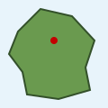
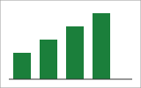

Démo RGAA 1 – Images
Cette page rassemble des images conformes et non conformes à la thématique 1 du RGAA. Chaque carte indique le résultat attendu dans le panneau du bookmarklet.
Lancer RGAA 1 – Images (ou utilisez votre favori). Survolez ensuite les images, ou parcourez la liste en haut à droite. Le bouton « Estomper les images » (Maj+I) estompe les images, Échap arrête le bookmarklet.
1.1 Images porteuses d’information : présence d’une alternative
Une image qui transmet une information doit avoir un nom accessible.
Conformeimg avec alt

Attendu : ✓ nom accessible « L’équipe projet… » (alt).
Non conformeimg sans attribut alt
Attendu : × « Sans alternative » dans la liste, nom accessible absent.
Conformesvg avec role="img" et aria-label
Attendu : ✓ nom « Graphique : ventes en hausse » (aria-label), rôle img (attribut role).
À vérifiersvg avec <title> mais sans role="img"
Attendu : ! nom « Logo de l’association » (<title>) et constat « svg porteur d’information sans role="img" (1.1.5) ».
Non conformesvg sans aucune alternative
Attendu : × « Sans alternative », plus le constat ! sur le role="img" manquant (1.1.5).
ConformeÉlément avec role="img"
Attendu : ✓ nom « Note : 4 étoiles sur 5 » (aria-label).
Conformecanvas avec contenu alternatif
Attendu : ✓ nom « Courbe des températures… » (contenu alternatif).
Conformeinput type="image" avec alt
Attendu : ✓ nom « Rechercher » (alt).
Conformeobject avec contenu alternatif
Attendu : ✓ dans la liste, nom « Ventes trimestrielles… » (contenu alternatif). Le survol d’un object peut ne pas réagir : utilisez la liste.
Non conformeembed sans alternative
Attendu : × « Sans alternative » dans la liste. Comme pour object, le survol peut ne pas réagir.
Zones cliquables (area)

Attendu : image ✓ « Carte des agences » ; zone autour du point rouge Conforme✓ « Agence de Paris » ; zone du bas Non conforme× sans alternative.
1.2 Images de décoration : correctement ignorées
Une image décorative doit être ignorée par les lecteurs d’écran, sans alternative ni title.
Conformeimg avec alt=""
Attendu : ∅ « Décorative » (alt="").
Conformesvg avec aria-hidden="true"
Attendu : ∅ « Décorative » (aria-hidden="true").
Conformeimg avec role="presentation"
Attendu : ∅ « Décorative » (role="presentation").
Non conformealt="" mais avec un title
Attendu : ∅ décorative, avec le constat × « Image décorative avec title : à retirer (1.2) ».
Non conformearia-hidden mais avec un aria-label
Attendu : ∅ décorative, avec le constat × « Image décorative avec aria-label ».
À vérifierImage de fond CSS
Attendu (survol uniquement) : « Image CSS : Oui (background-image) », nom ! « Aucun : vérifier que l’image CSS est décorative ».
À vérifierIcône insérée par ::before
Attendu (survol de l’icône) : « Image CSS : Oui (::before content (CSS)) ».
1.3 Pertinence de l’alternative
Le bookmarklet signale les alternatives suspectes ; la pertinence reste à juger par l’auditeur.
Non conformeAlternative = nom du fichier
Attendu : ! « Alternative = nom de fichier (1.3) ».
Non conformeAlternative générique
Attendu : ! « Alternative générique (« Logo ») (1.3) ».
À vérifierAlternative très longue

Attendu : ! « Alternative longue (… caractères) : une description détaillée serait-elle plus adaptée ? ».
Non conformeAlternative non pertinente
Attendu : ✓ dans le panneau : le bookmarklet ne peut pas juger le sens, comparez l’alternative au fichier « graphique-ventes.svg ».
ConformeImage dans un lien
Attendu : ✓ « Accueil » (alt), « Image dans un lien : Oui », nom du lien « Accueil ».
ConformeLien icône + texte, icône décorative
Attendu : ∅ décorative, nom du lien « Aide en ligne » (texte du lien).
Non conformearia-labelledby vers un id absent
Attendu : × sans alternative, constat « aria-labelledby : id introuvable ».
1.6 Description détaillée
Une image complexe (graphique, schéma) doit avoir une description détaillée.
Conformearia-describedby
Les ventes progressent chaque trimestre : 30, 45, 60 puis 75 unités.
Attendu : description « Les ventes progressent… » (aria-describedby), paragraphe entouré en orange.
ConformeLien adjacent
Attendu : description « Description détaillée du graphique » (lien adjacent).
À vérifierlongdesc (obsolète)
Attendu : description « ventes-2025.html » (longdesc) et ! « longdesc est obsolète ».
Non conformeGraphique sans description
Attendu : « Description : aucune ». À l’auditeur de juger si l’image en nécessite une.
1.8 Images texte
Un texte affiché sous forme d’image doit, si possible, être remplacé par du texte mis en forme. Utilisez le bouton « Estomper les images » ou Maj+I : ce qui disparaît est une image.
Non conformeTexte en image
Attendu : avec Maj+I, le bandeau s’estompe : c’est une image texte.
ConformeTexte mis en forme en CSS
Attendu : avec Maj+I, le texte reste visible.
1.9 Légendes d’images
Une image légendée doit être dans une figure avec role="figure" (ou group) et un aria-label reprenant la légende.
Conformefigure complète
Attendu : légende « Le siège… » (figcaption), aucun constat.
Non conformefigure sans role ni aria-label
Attendu : ! « figure sans role="figure"… » et ! « figure sans aria-label… (1.9.1) ».
Non conformearia-label différent de la légende
Attendu : ! « aria-label de figure différent de la légende (1.9.1) ».
Cas particuliers : Shadow DOM et iframe
Le bookmarklet inspecte aussi le contenu des Shadow DOM ouverts et des iframes de même origine.
Non conformeImage dans un Shadow DOM
Attendu : × « Sans alternative » (img sans alt dans le composant).
ConformeImage dans une iframe
Attendu : ✓ « Logo du partenaire » dans la liste et au survol.